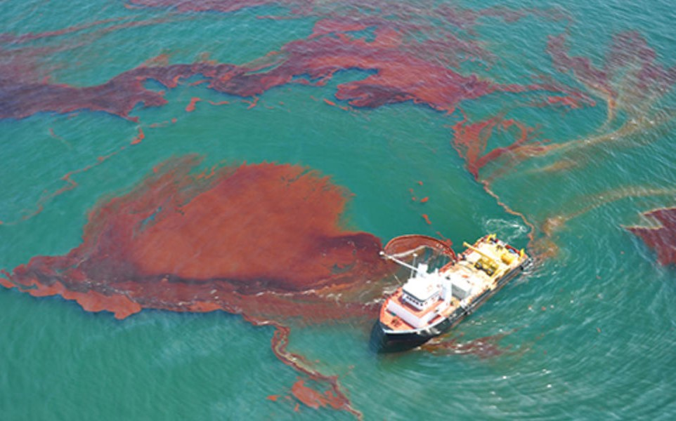
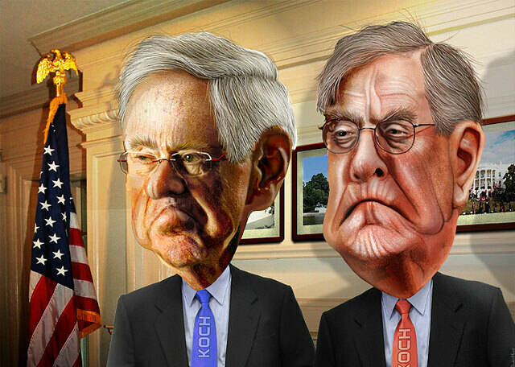

Oil Rig Explosion
The team investigated the British Petroleum (BP) Deep Horizon oil rig explosion that began on 20 April 2010 off of the coast of the United States in the Gulf of Mexico and reveals a drastic manpower shortage in the Minerals Management Service (MMS). Jim Harper -on his first day at ACN- caught the importance of this event through the press alert and insisted on a following-up. He used his personal connection with BP management and outside source from BP's subcontractor Halliburton to reveal the cause of the explosion was actually manpower shortage, ignorance of failed test, and management irresponsibility. The show that night was a great success and gave Charlie Skinner confidence of his new show reformation plan.
Tea Party Election
The News Night team covered the Tea Party candidates during the US Congressional mid-term elections. Will revealed to the public that Koch brothers have bankrolled Tea Party candidates in excess of $40 million in the past 6 months - despite the stress and obstacles from both the management of ACN and Washington, the team insisted telling audience the truth. The fact about the relationship between the Koch brothers and the Tea Party means that the Tea Party wasn't a grassroots movement at all, they are not representing the voices of average Americans that were drowned out by lobbyists and special interests.
Arab Spring Developments
To get first-hand information about the Arab Spring development, the team hired a local Egyptian stringer named Kahlid to record video from the center of the movement and report to the ACN audience. On his way to get information from the local government, the Kahlid got caught in Egyptian military custody and they were demanding an extortionate ransom. To protect Kahlid, Will paid for his release on his own without letting the team worried about whether the company would pay for this. When employees in the office finally discovered this, they each gave Will a cheque to contribute, mimicking a scene from one of Will's favorite films-Rudy.